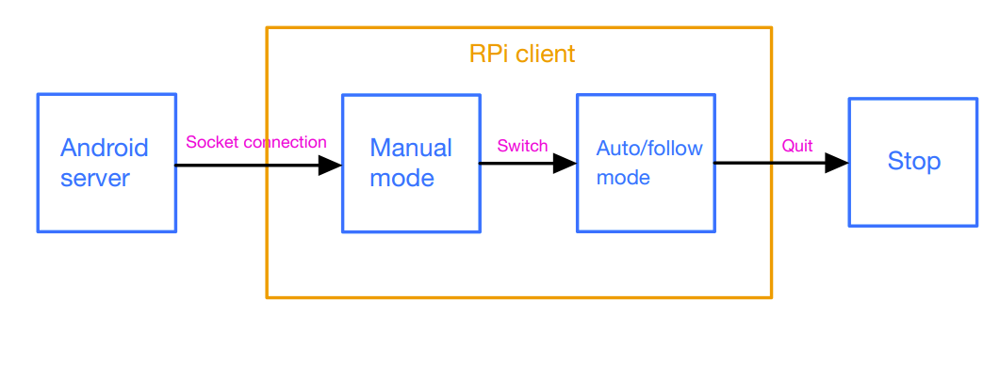
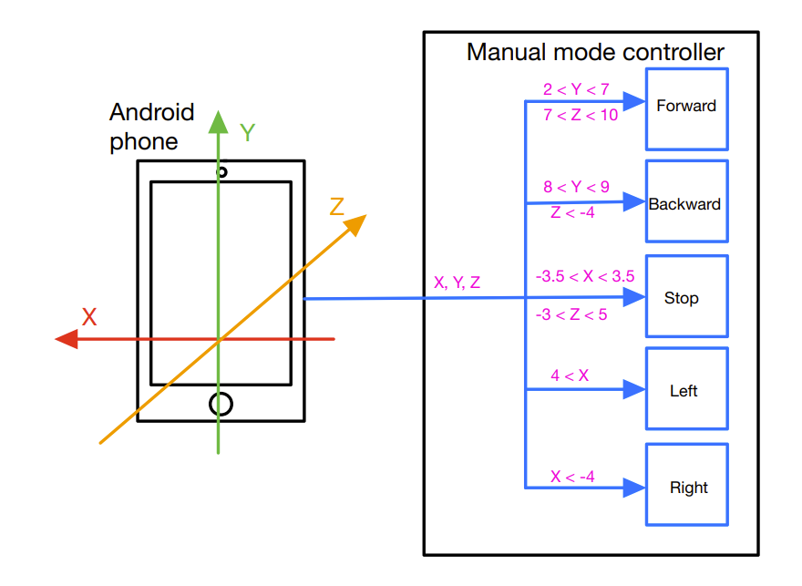
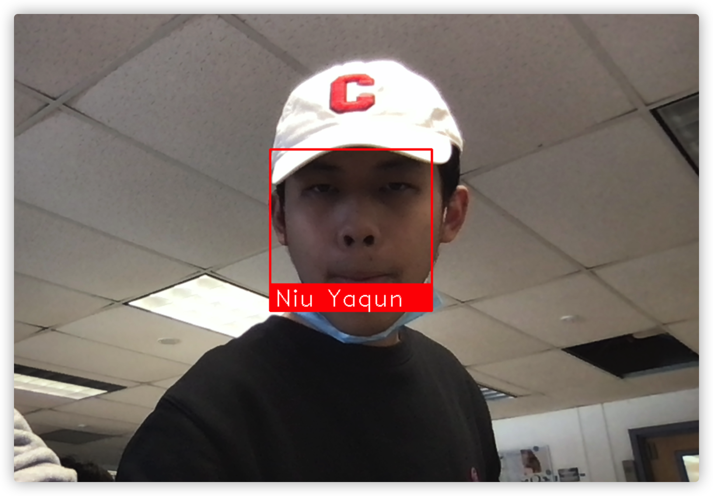

Demonstration Video
Introduction
This is the final project of Corenll University ECE 5725 Embeded Operating System. The project is about a Raspberry Pi robot mover with a manual mode and an auto mode. In the manual mode, the user can control the robot with an Android mobile phone and watch the real-time video via the Pi camera mounted on the front of the robot. When the user switches to the auto mode, the robot will be able to follow the user by capturing and remembering the user' shoes' color. The project aims to make people's lives more convenient and keep social distance under this epidemic environment, like helping people to carry heavy goods or assisting people to deliver objects.
The content below will give a detailed description of the project, mainly including the design and the testing of the project. Issues during the development will be discussed, and future improvements will be listed. In addtion, all reference and resources of this project will be included, and the whole project code can be found at the end of this website.

Project Objective:
- The robot can completely support the manual mode on an Android mobile phone with a real-time video transmission and can switch to the auto mode smoothly.
- The robot can accurately follow the user with maintaining an appropriate distance.
- The robot can play the music to show its status.
Design
Hardware
Figure 1 shows the hardware system we envisioned at the beginning. The camera is used for the face recognition. The motor controller is used to control the speed and rotation direction of the wheel. Besides, users can use the physical stop button in the PiTFT to stop the robot. The speaker is used to play the audio to show the robot's status. The bluetooth adapter is used to connect with mobile phone to locate the position of user’s phone. The tray is used to carry some objects. And the camera is used for face recognition and video display.
Figure 2 shows the hardware system we finally adopted. Different designs from before include that the bluetooth adapter is abandoned. Because positioning via Bluetooth is not very accurate and the signal transmitted through Bluetooth may be disturbed by the external environment. In addition, the Bluetooth signal can pass through obstacles, which will cause the robot to be unable to avoid obstacles independently, resulting in collision. We also abandoned the tray because the power output of the motor is not very large and the speed of the robot will be very slow if some objects are placed on the tray. We also used camera to do color recognition and tracking using OpenCV and abandoned face recognition because the efficiency of face recognition program in raspberry pie system is relatively low.
Software
Compared with the hardware part, the software design is more complex, so we divide this part into several sections. The general software flowchart is shown in Figure 3 below.
General Android Interface
The Android interface is built by Android studio, which is the official integrated development environment (IDE) for developing Android applicationsIn the app, and it is built on the basis of IntelliJ idea. In addition to IntelliJ's powerful code editor and developer tools, Android studio also provides more functions that can improve the efficiency of Android application construction. Android studio is faster to start and respond than eclipse. Gradle is a new build tool that combines the advantages of ant and Maven. It is great in terms of configuration, compilation and packaging. The editor of Android studio is very intelligent. In addition to absorbing the advantages of eclipse + ADT, it also comes with multi device real-time preview. Hence, it is a strong tool for Android development.
As for the interface, the middle area is for displaying the real-time video. In addition, the buttons in the upper left corner are used to switch between auto and manual modes and exit the program. After the Android program is started, it is first in the manual mode, and the button content displays ‘SWITCH TO AUTO’. After clicking the button, the robot enters the automatic mode, and the button turns red and the button content ‘QUIT’ is displayed at the same time. After clicking the button again, the Android program will exit in about two seconds. Figure 4 and 5 show the interface of the app. Figure 4 shows the manual mode interface, and Figure 5 shows the auto mode interface. The tutorial of Android studio can be found here.
We configured the phone's accelerometer and added the SensorManager and Sensor variables to the MainActivity class in Android Studio. We configured the SensorManager and Sensor to get information from the phone's accelerometer and chose to use the rotation vector accelerometer. Then we added onAccuracyChanged and onSensorChanged in the MainActivity file. And the data transformation is realzied by Socket.
Socket Connection
In order to realize the wireless communication between the Android and our RPi, we applied Socket to create a simple server on Android and a client on our RPi by following the tutorial. Socket is an implementation of the "open-read / write-close" mode. The server and the client maintain a "file" respectively. After the connection is established and opened, we can write content to the file for the other party to read or read the other party's content. The file is closed at the end of communication. Socket ensures the communication between different computers, that is, network communication. To make sure the stability of the connection, we specified the protocol to be TCP by the variable SOCK_STREAM and indicated the Internet address family to be IPv4 by the variable AF_INET. The Figure 6 below shows the connection-oriented TCP sequence diagram.
However, different from the tutorial, we operated the data analysis in our client, and launch corresponding programs based on commands sent from the server. In addition, we applied a infinity while in our server to keep sending commands to our client to make sure the robot can operate required actions on time. More details can be found in our client and server code.
Real-time Video Transmission
First, we connected our Raspberry Pi camera module following this tutorial. We inserted the Camera Module ribbon cable into the Camera Module port and ensured that the silver connectors facing the HDMI port . Then we started up our Raspberry Pi and ran sudo raspi-config to enable the camera option in Interfaces section. After enabling the camera, we ran sudo reboot to reboot the Raspberry Pi.
In order to use the Raspberry Pi camera to get the livestreaming video, we used Socket communication to stream the live video feed from Pi camera to a website http://Raspberry_Pi_IP_Address:8050. Port 8050 was selected to avoid conflicts with other users or resources. We used ‘Webview’ module in Android Studio to display the content of the website on the app. In this way, the user can use the app to watch the video in real time to better control the robot motion.
Manual Mode Controller
The general logic of the controller is modified based on Lab 3. After reading the XYZ coordinates transmitted from the Android program, we limited the value range of XYZ coordinates, so that the robot can make corresponding actions when the mobile phone is at different angles and positions. Before setting the coordinate range, we first put the mobile phone in different positions, observed the XYZ value corresponding to the mobile phone in different positions, and then set the later limited range according to the recorded data. We did not set different coordinate ranges adjacent to each other, so as to make the difference between different operations larger and have better discrimination. In addition, we found that left turn and right turn only need to be distinguished according to the value of X, and going forward or backward need to be distinguished by combining the values of Y and Z.
Apart from limiting the value of XYZ, we also added a flag to each decision condition. If the robot is in the same state continuously, the program will only perform the corresponding state once, which will reduce the load of the system and improve the performance of the system.
Figure 7 below shows the accelerometer axis information and how the robot makes corresponding actions according to the range of XYZ coordinates.
Auto Mode Color Recognition and Tracking
The functions of this sections are built mainly based on OpenCV. OpenCV is a cross platform computer vision library. OpenCV can be used to develop real-time image processing, computer vision and pattern recognition programs. It is committed to real-world real-time applications. Its execution speed has been significantly improved through optimized C code writing, and faster processing speed can be obtained by purchasing Intel's IPP high-performance multimedia functions. OpenCV is widely used in the following fields like human computer interaction, object recognition, image segmentation and face recognition, etc.
For the color recognition, we first define a color list which stored the HSV range values of several colors. Then for each frame obtained from PI camera, we generate mask images of different colors and filter out other colors through image binarization and image dilation. Then we calculate which color corresponds to the largest area using cv2.contourArea(), and we recognize it as the main color of this frame image. When the main color remains unchanged for 10 seconds, we will end the color recognition program and use this color as the color of shoes we will track later.
For color tracking, we first receive the color returned from the color recognition file. Then we extract the pixels in line with the color HSV range for each frame obtained by the camera, and use cv2.findContours() to find the outline of the object that matches the color.
After the object with this color is detected in the view of the robot, if the area of object is greater than 1000, the robot will do the normal following operation. We use cv2.contourArea() to calculate the area of the object, and set different thresholds to make the robot perform different actions. When the area is within a certain range, we keep the robot stationary. When the area exceeds a certain threshold, the car will go forward at full speed. When it is less than a certain threshold, the car will go backward at full speed. In addition, we calculate the x coordinate of the center point of the object to make the robot turn left and right, so that the center point of the object is always kept within the range close to the center area. Figure 8 shows how does the robot operate tracking based on the area of the target. Figure 9 shows the whole process of automatic mode. The face recognition part is missed because we found that the efficiency of the method is too low, so we just deleted it from our present project. However, in the future, we will explore ways to improve the efficiency and add it to our project.
Face Recognition
We planned to use the Dlib library to develop our face recognition system. It is a C + + Open Source Toolkit containing machine learning algorithms. Dlib can help us create many complex machine learning software to help solve practical problems. At present, Dlib has been widely used in industry and academic fields, including robots, embedded devices, mobile phones and large-scale high-performance computing environments.
The first task that we perform is detecting faces in the image(photograph) or video stream. Now we know that the exact coordinates/location of the face, so we extract this face for further processing. After we crop out the face from the image, we extract specific features from it. Here we are going to see how to use face embeddings to extract these features of the face. When we train the neural network, the network learns to output similar vectors for faces that look similar. Then we pass all the images in our data to this pre-trained network to get the respective embeddings and save these embeddings in a file for the next step. We have face embeddings for each face in our data saved in a file, the next step is to recognize a new image that is not in our data. Hence the first step is to compute the face embedding for the image using the same network we used earlier and then compare this embedding with the rest of the embeddings that we have. We recognize the face if the generated embedding is closer or similar to any other embedding. The Figure 10 below shows the result of our face recognition function on our local computers.
However, when we try to use Dlib to do face recognition, we encountered some problems. The face recognition program can run correctly on the computer and realize the corresponding functions. But when we run the face recognition program in the raspberry pie system, it takes about a few minutes to start, and the running speed is very slow. We tried to run the program using parallel computing, but the performance did not improve significantly. In addition, we tried to run the program alone on raspberry pie, but the startup time was not shortened. In the future, we will continue to explore other solutions.
Testing
In the process of our project, we operated our tests based on the following steps. First, after completing the code of a program, we will test it locally to eliminate the bugs After that, we will go to the laboratory and run the program in the raspberry pie system for unit testing to test the performance and performance of the program. After that, we conduct integration test to integrate each module and eliminate some problems. Finally, we conduct system test and interaction test to ensure that the robot can successfully complete various functions in the overall process. In this way, we successfully found and solved multiple issues during the development, and finally made our project work perfectly. Figure 11 and 12 show how we test the color recognize program on the laptop. Figure 11 is that the object with the specific color can be recognized if we add an area limit. Figure 12 shows that the program can be affected by noise if we do not set a limitation filter.
When we ran our Android application to do the Pi camera video streaming test, an error called ERR_CLEARTEXT_NOT_PERMITTED happened. Then we added android:usesCleartextTraffic="true" flag in the AndroidManifest.xml file under the application block and fixed the problem. Besides, we chose port 8001, but occasionally web content cannot be displayed on the app. Later, we found that port 8001 is easy to be occupied, so we changed it to port 8050.
In addition, when we tested manual mode, at first, we set the speed of the robot forward and backward, left turn and right turn to full speed, but later we found that the speed of left turn and right turn should not be too high. In fact, the speed of left turn and right turn should be relatively slow, so we set it to half speed.
And when we tested automatic mode, we encountered some problems. We didn't filter out too small color areas, so the program will recognize small color areas as the objects we want. Besides, we found that when the coordinates of the center point of the object are outside the set range, the robot cannot turn left or right in time. Then we remove the flag in the left turn and right turn decision conditions to improve the priority of these two operations and successfully solved this problem. When we performed color recognition and tracking, the error of ‘Pi camera out of resources’ occurred. The reason is that we did not close Pi camera resources after color recognition, so it conflicted with the subsequent color tracking. At the beginning, we controlled the car to turn left and right by limiting the X coordinates of the left and right boundaries of the object, but we found that in the actual scene, the left and right boundaries of the object are easy to exceed Pi camera's field of vision, so we changed the judgment condition to the X coordinate value of the center point of the object.
When we were doing system testing and interaction testing, we encountered some problems. When we manipulated the robot to turn left or right in manual mode, the robot did not make corresponding action and remained stationary. Later, we found that the battery was too low. After we replaced the new battery, the car returned to normal.
Result
At first, we start the robot program using computer and open the app on the mobile phone. At this time, the robot will be in manual mode and the real-time video returned by Pi camera will be displayed in the app. When we place the mobile phone vertically, the robot will enter the stop state, and play the safe driving guidelines. After playing the audio, we can change the angle and position of the mobile phone to control the robot to move forward and backward at full speed or turn left and right at half speed. Click the 'SWITCH TO AUTO' button on the app, and the robot will enter the automatic mode. After entering the automatic mode, the user first places the shoes in front of Pi camera. After staying for 10 seconds, the robot will remember the color of the shoes. Then the user can move the shoes away and appear in the front field of vision of the robot. The robot will track the user's shoes according to the color just recognized. When the user's shoes are beyond the field of vision of the Pi camera, The robot will turn left and right until the target is rediscovered. When the user moves forward, the robot moves forward. When the user is too close to the robot, the robot will move backward. When the user's shoes deviate to the right or left boundary in the Pi camera field of view, the robot will turn right or left to keep the center point of the shoes within the specific area of Pi camera. Click the ‘QUIT’ button on the app again, the program will exit in two seconds, and the robot will stop at the same time.
We successfully completed the objectives listed in the proposal as scheduled, and further optimized some functions. However, due to the low performance of face recognition program in raspberry pie system, we have not integrated it into our project for the time being. Our program can run smoothly on the computer, and the code eliminates all bugs and problems. In the future, we will explore how to improve the performance of face recognition program on raspberry pie system and integrate it into our project.
Conclusion
Generally, we have achieved nearly every target we built at the beginning. Our project includes Raspberry Pi robot and mobile app. The user can control the robot on the mobile phone app. At first, the robot will be in manual mode. The user can watch the real-time video in the app and control the movement of the robot by changing the position and angle of the mobile phone. After the user switches to automatic mode, the robot will recognize the color of the user's shoes and follow it. After that, the user can use the app to exit the robot program.
There are some functions that don't work. Face recognition program cannot work very well because the efficiency of face recognition program in raspberry pie system is relatively low. Besides, positioning via Bluetooth is not very accurate and the signal transmitted through Bluetooth may be disturbed by the external environment. The real-time frames obtained by Pi camera cannot be directly transmitted to Android App due to its related limitations.
In this final project, we learned how to use Android studio to create an app and realize the desired functions. In addition, we learned about socket communication and how to use OpenCV for face recognition, color recognition and color tracking. More importantly, we learned how to start from scratch and complete the whole project step by step after determining the theme and goal of a project, and exercised our hands-on ability and problem-solving ability.
Future Improvement
In the future, this project could be improved on by implementing a few more objectives. Parallel computing will be introduced into our project to optimize performance and improve running speed. This will give better play to the underlying parallel hardware, because serial programs will waste computing resources. Parallel programs have advantages in multi-core CPU systems. For example, when IO operations are blocked, the CPU can turn to execute other threads.
The face recognition program will be improved to enable it to start and run in a shorter time on the Raspberry Pi system. We may build a deep learning network to realize face recognition, improve the accuracy of the network through a large number of training data, and find ways to deploy it in the Raspberry Pi system
In addition, we will add more voice prompts to improve the user's interactive experience. In this way, users can know whether their shoes have been recognized. And it can also increase the interest and entertainment of this project.
We will also explore more recognition and following methods besides color tracking, so that the robot can track the correct target more accurately without being affected by other pedestrians and objects.
Team & Work Distribution

Project group picture
Yaqun Niu
Cornell ECE MEng '22
- Generated the real-time video transmission
- Built manual mode and auto mode controllers
- Developed the color recognition system
- Developed the audio system
- Built the website
Xu Hai
Cornell ECE MEng '22
- Designed and built the overall hardware and software architecture
- Built the Android server and the RPi client
- Tested and optimized controllers
- Developed the face recognition function
- Built the website
Appendix
Parts List
- Raspberry Pi $35.00
- Raspberry Pi Camera V2 $25.00
- DC Motor * 2 $4.00
- JBL Bluetooth Speaker $49.99
- PiTFT 320x240 2.8 $44.99
Total: $158.98
References
PiCamera DocumentDlib Library
Bootstrap
Pigpio Library
R-Pi GPIO Document
Android WebView
Video Streaming
Color Recognition
Pi Camera
Android Studio
OpenCV
Past Students' Awesome Projects and Prof. Joe Skovira & TAs' Effective Help
Code Appendix
Please see our GitHub repo for more details!Server.java - Android server
client.py - RPi client
pwm_hw_channel.py - Manual mode controller
color_recognize_v2.py - Auto mode color capturer
draw_box_3.py - Auto mode controller
Server.java
1 2 3 4 5 6 7 8 9 10 11 12 13 14 15 16 17 18 19 20 21 22 23 24 25 26 27 28 29 30 31 32 33 34 35 36 37 38 39 40 41 42 43 44 45 46 47 48 49 50 51 52 53 54 55 56 57 58 59 60 61 62 63 64 65 66 67 68 69 70 71 72 73 74 75 76 77 78 79 80 81 82 83 84 85 86 87 88 89 90 91 92 93 94 95 96 97 98 99 100 101 102 103 104 105 106 107 108 109 110 111 112 113 114 115 116 117 118 119 120 121 122 123 124 125 126 127 128 129 130 131 132 133 134 135 136 137 138 139 | /* ECE 5725 final project RPi Robot Mover Fall 2021 Authors: Xu Hai (xh357), Yaqun Niu (yn232) */ package com.example.ece_5725; import java.io.IOException; import java.io.OutputStream; import java.io.PrintStream; import java.net.InetAddress; import java.net.NetworkInterface; import java.net.ServerSocket; import java.net.Socket; import java.net.SocketException; import java.util.Enumeration; public class Server { MainActivity activity; ServerSocket serverSocket; String message = ""; // Specify the port // Should keep the same as client in RPi static final int socketServerPORT = 8080; public Server(MainActivity activity) { this.activity = activity; Thread socketServerThread = new Thread(new SocketServerThread()); socketServerThread.start(); } public int getPort() { return socketServerPORT; } public void onDestroy() { if (serverSocket != null) { try { serverSocket.close(); } catch (IOException e) { e.printStackTrace(); } } } private class SocketServerThread extends Thread { int count = 0; @Override public void run() { try { // Create the socket connection with the specified port serverSocket = new ServerSocket(socketServerPORT); while (true) { // Block the call until connection gets built Socket socket = serverSocket.accept(); SocketServerReplyThread socketServerReplyThread = new SocketServerReplyThread(socket); socketServerReplyThread.run(); } } catch (IOException e) { e.printStackTrace(); } } } private class SocketServerReplyThread extends Thread { private Socket hostThreadSocket; SocketServerReplyThread(Socket socket) { hostThreadSocket = socket; } @Override public void run() { OutputStream outputStream; try { outputStream = hostThreadSocket.getOutputStream(); PrintStream printStream = new PrintStream(outputStream); // Keep transferring coordinate information to the client // Also transfer signal to switch the mode while (true) { printStream.println(activity.x_axis + "=" + activity.y_axis + "=" + activity.z_axis + "=" + activity.j + " \n"); // Decrease the client workload sleep(1000); } } catch (IOException | InterruptedException e) { e.printStackTrace(); message += "Something wrong! " + e.toString() + "\n"; } activity.runOnUiThread(new Runnable() { @Override public void run() { activity.msg.setText(message); } }); } } public String getIpAddress() { String ip = ""; try { Enumeration<NetworkInterface> enumNetworkInterfaces = NetworkInterface .getNetworkInterfaces(); while (enumNetworkInterfaces.hasMoreElements()) { NetworkInterface networkInterface = enumNetworkInterfaces .nextElement(); Enumeration<InetAddress> enumInetAddress = networkInterface .getInetAddresses(); while (enumInetAddress.hasMoreElements()) { InetAddress inetAddress = enumInetAddress .nextElement(); if (inetAddress.isSiteLocalAddress()) { ip += "Server running at : " + inetAddress.getHostAddress(); } } } } catch (SocketException e) { e.printStackTrace(); ip += "Something Wrong! " + e.toString() + "\n"; } return ip; } } |
client.py
1 2 3 4 5 6 7 8 9 10 11 12 13 14 15 16 17 18 19 20 21 22 23 24 25 26 27 28 29 30 31 32 33 34 35 36 37 38 39 40 41 42 43 44 45 46 47 48 49 50 51 52 53 54 55 56 57 58 59 60 61 62 63 64 65 66 67 68 69 70 71 72 73 74 75 76 77 78 79 80 81 82 83 84 85 86 87 88 89 90 91 92 93 94 95 96 97 98 99 | # # ECE 5725 final project # RPi Robot Mover # Fall 2021 # Authors: Xu Hai (xh357), Yaqun Niu (yn232) # #!/usr/bin/env python3 import socket import time import os from subprocess import call # Specify the Android phone IP and port address HOST = '10.48.92.55' PORT = 8080 # AF_INET is the Internet address family for IPv4 # SOCK_STREAM indicates the protocol used is TCP s = socket.socket(socket.AF_INET, socket.SOCK_STREAM) print("Start to connect...") print('HOST: ' + HOST) print(PORT) s.connect((HOST, PORT)) print("Connected!") cur_dir = os.getcwd() # Make sure mode-switch signal file has been removed while os.path.exists(cur_dir + "/quit_manual.txt"): os.remove(cur_dir + "/quit_manual.txt") time.sleep(1) # Initial the mode flag manual_mode = False # Time out start_time = time.time() # Keep receiving data from the server while 1: if (time.time() - start_time >= 300): break data = s.recv(1024) data = repr(data) tmp = data.split(' ') # Capture corresponding information from server raw data if len(tmp) > 1: tmp = tmp[0].split('=')[-1] # Manual mode if int(tmp) == 0: # First time to enter manual mode if not manual_mode: if os.path.exists(cur_dir + "/quit_manual.txt"): os.remove(cur_dir + "/quit_manual.txt") if os.path.exists(cur_dir + "/commands.txt"): os.remove(cur_dir + "/commands.txt") time.sleep(1) manual_mode = True command_file = open("commands.txt", "w") call("./start_manual.sh", shell=True) print('Start manual mode') # Writing data into the file read by the controller command_file.write(data) command_file.flush() # Auto mode elif int(tmp) == 1: if manual_mode: while os.path.exists(cur_dir + "/quit_auto.txt"): os.remove(cur_dir + "/quit_auto.txt") time.sleep(1) # Quit manual mode # Create the signal file to stop manual mode programs manual_mode = False quit_manual = open("quit_manual.txt", "w") quit_manual.write("Hello") quit_manual.close() # Start auto mode programs call("./start_auto.sh", shell=True) print('Start auto mode') # Quit elif int(tmp) == 2: # Clear buffer files # Create the signal file to stop auto mode programs os.remove(cur_dir + "/quit_manual.txt") quit_auto = open("quit_auto.txt", "w") quit_auto.write("Hello") quit_auto.close() break |
pwm_hw_channel.py
1 2 3 4 5 6 7 8 9 10 11 12 13 14 15 16 17 18 19 20 21 22 23 24 25 26 27 28 29 30 31 32 33 34 35 36 37 38 39 40 41 42 43 44 45 46 47 48 49 50 51 52 53 54 55 56 57 58 59 60 61 62 63 64 65 66 67 68 69 70 71 72 73 74 75 76 77 78 79 80 81 82 83 84 85 86 87 88 89 90 91 92 93 94 95 96 97 98 99 100 101 102 103 104 105 106 107 108 109 110 111 112 113 114 115 116 117 118 119 120 121 122 123 124 125 126 127 128 129 130 131 132 133 134 135 136 137 138 139 140 141 142 143 144 145 146 147 | # # ECE 5725 final project # RPi Robot Mover # Fall 2021 # Authors: Xu Hai (xh357), Yaqun Niu (yn232) # # Manual mode controller import time import RPi.GPIO as GPIO import pigpio import re import os import pygame.mixer # Initialize GPIO settings GPIO.setmode(GPIO.BCM) GPIO.setup(6, GPIO.OUT) GPIO.setup(5, GPIO.OUT) GPIO.setup(22, GPIO.OUT) GPIO.setup(27, GPIO.OUT) pi_hw=pigpio.pi() filename="quit_manual.txt" # Initialize flags go_forward = False back_ward = False Turn_left = False Turn_right = False stop = True playmusic=True try: while True: # Check whether the use wants to switch to auto mode if os.path.exists(filename): pi_hw.hardware_PWM(13, 0, 0) pi_hw.hardware_PWM(12, 0, 0) pi_hw.stop() GPIO.cleanup() print("quit") quit() # Read commands from the server f = open('./commands.txt', 'r').read() command = f.split(' ') # Capture corresponding information from the server raw data if len(command) >= 2: command = command[-2].split('=') if len(command) > 2: x_value = float(command[0].split("n")[-1].split("'")[-1]) y_value = float(command[1]) z_value = float(command[2]) manual_auto = int(command[3]) # The commands is given based on the coordinate information of the accelerometer # Move forward if 2 < y_value < 7 and 7 < z_value < 10 and go_forward: go_forward = False back_ward = True Turn_left = True Turn_right = True stop = True print("forward") pi_hw.hardware_PWM(13, 50, 1000000) pi_hw.hardware_PWM(12, 50, 1000000) GPIO.output(5, GPIO.HIGH) GPIO.output(6, GPIO.LOW) GPIO.output(22, GPIO.LOW) GPIO.output(27, GPIO.HIGH) # Move backward elif 8 < y_value < 9 and z_value < -4 and back_ward: go_forward = True back_ward = False Turn_left = True Turn_right = True stop = True print("backward") pi_hw.hardware_PWM(13, 50, 1000000) pi_hw.hardware_PWM(12, 50, 1000000) GPIO.output(5, GPIO.LOW) GPIO.output(6, GPIO.HIGH) GPIO.output(22, GPIO.HIGH) GPIO.output(27, GPIO.LOW) # Turn left elif x_value > 4 and Turn_left: go_forward = True back_ward = True Turn_left = False Turn_right = True stop = True print("turn left") pi_hw.hardware_PWM(13, 50, 500000) pi_hw.hardware_PWM(12, 50, 500000) GPIO.output(5, GPIO.LOW) GPIO.output(6, GPIO.HIGH) GPIO.output(22, GPIO.LOW) GPIO.output(27, GPIO.HIGH) # Turn right elif x_value < -4 and Turn_right: go_forward = True back_ward = True Turn_left = True Turn_right = False stop = True print("turn right") pi_hw.hardware_PWM(13, 50, 500000) pi_hw.hardware_PWM(12, 50, 500000) GPIO.output(5, GPIO.HIGH) GPIO.output(6, GPIO.LOW) GPIO.output(22, GPIO.HIGH) GPIO.output(27, GPIO.LOW) # Stop elif -3.5 < x_value < 3.5 and 8 < y_value < 10 and -3 < z_value < 5 and stop: # In order to make it safe # when the user first launch the program # the user needs to first adjust the controller position # to stop position to start controlling if playmusic: print("Ready") # Play the sound to inform the user the robot is ready to go os.system("omxplayer './sound/safe_rule.mp3'") playmusic=False print("stop") go_forward = True back_ward = True Turn_left = True Turn_right = True stop = False pi_hw.hardware_PWM(13, 0, 0) pi_hw.hardware_PWM(12, 0, 0) except KeyboardInterrupt: pass pi_hw.stop() GPIO.cleanup() |
color_recognize_v2.py
1 2 3 4 5 6 7 8 9 10 11 12 13 14 15 16 17 18 19 20 21 22 23 24 25 26 27 28 29 30 31 32 33 34 35 36 37 38 39 40 41 42 43 44 45 46 47 48 49 50 51 52 53 54 55 56 57 58 59 60 61 62 63 64 65 66 67 68 69 70 71 72 73 74 75 76 77 78 79 80 81 82 83 84 85 86 | # # ECE 5725 final project # RPi Robot Mover # Fall 2021 # Authors: Xu Hai (xh357), Yaqun Niu (yn232) # import cv2 import colorList import picamera import io import os import time import threading import numpy as np from piecamera import PieCamera import pygame.mixer # Capture the main color in front of the camera for one frame def get_color(frame): hsv = cv2.cvtColor(frame, cv2.COLOR_BGR2HSV) maxsum = -100 color = None color_dict = colorList.getColorList() # Image process to get for d in color_dict: mask = cv2.inRange(hsv, color_dict[d][0], color_dict[d][1]) cv2.imwrite(d + '.jpg', mask) binary = cv2.threshold(mask, 127, 255, cv2.THRESH_BINARY)[1] binary = cv2.dilate(binary, None, iterations=2) cnts, h = cv2.findContours(binary.copy(), cv2.RETR_EXTERNAL, cv2.CHAIN_APPROX_SIMPLE)[-2:] sum = 0 for c in cnts: sum += cv2.contourArea(c) if sum > maxsum: maxsum = sum color = d return color # Get the hsv of the main color in front of the camera during the period def get_hsv(): # Load color hsv from a pre-built color list color_dict = colorList.getColorList() camera = PieCamera() key = -1 result_1 = "None" i = 0 same_color = True # Play the sound to inform the user # that the robot starts to capture the color pygame.mixer.init() pygame.mixer.music.load(os.getcwd() + "/sound/test.wav") pygame.mixer.music.play(-1) time.sleep(1) pygame.mixer.music.stop() # Make sure the robot get the main color during the period while key == -1: ret, frame = camera.read() if ret is True and same_color: result = get_color(frame) if result == result_1: i += 1 if i >= 50: same_color = False print(result) # Play the sound to inform the user # that the robot has captured the color pygame.mixer.music.load(os.getcwd() + "/sound/success.wav") pygame.mixer.music.play(-1) time.sleep(2) pygame.mixer.music.stop() break else: i = 0 result_1 = result # Close the camera to release the resource camera.close() return result |
draw_box_3.py
1 2 3 4 5 6 7 8 9 10 11 12 13 14 15 16 17 18 19 20 21 22 23 24 25 26 27 28 29 30 31 32 33 34 35 36 37 38 39 40 41 42 43 44 45 46 47 48 49 50 51 52 53 54 55 56 57 58 59 60 61 62 63 64 65 66 67 68 69 70 71 72 73 74 75 76 77 78 79 80 81 82 83 84 85 86 87 88 89 90 91 92 93 94 95 96 97 98 99 100 101 102 103 104 105 106 107 108 109 110 111 112 113 114 115 116 117 118 119 120 121 122 123 124 125 126 127 128 129 130 131 132 133 134 135 136 137 138 139 140 141 142 143 144 145 146 147 148 149 150 151 152 153 154 155 156 157 158 159 160 161 162 163 164 165 166 167 168 169 170 171 172 173 174 175 176 177 178 179 180 181 182 183 184 185 186 187 188 189 190 191 192 193 194 195 196 197 198 199 200 201 202 203 204 205 206 207 | # # ECE 5725 final project # RPi Robot Mover # Fall 2021 # Authors: Xu Hai (xh357), Yaqun Niu (yn232) # # Auto mode controller import cv2 import numpy as np import color_recognize_v2 from piecamera import PieCamera import time import RPi.GPIO as GPIO import pigpio import re import os # Initialize GPIO settings GPIO.setmode(GPIO.BCM) GPIO.setup(6, GPIO.OUT) GPIO.setup(5, GPIO.OUT) GPIO.setup(22, GPIO.OUT) GPIO.setup(27, GPIO.OUT) pi_hw=pigpio.pi() # Initialize flags go_forward = False back_ward = False Turn_left = False Turn_right = False stop = True # Get the main color in front of the camera during the period result=color_recognize_v2.get_hsv() ball_color = result # Define the hsv range of known colors color_dist = {'red': {'Lower': np.array([0, 60, 60]), 'Upper': np.array([6, 255, 255])}, 'blue': {'Lower': np.array([100, 80, 46]), 'Upper': np.array([124, 255, 255])}, 'green': {'Lower': np.array([35, 43, 35]), 'Upper': np.array([90, 255, 255])}, 'orange': {'Lower': np.array([11, 43, 46]), 'Upper': np.array([34, 255, 255])}, 'black': {'Lower': np.array([0, 0, 0]), 'Upper': np.array([180, 255, 46])} } camera = PieCamera() i=0 key=-1 filename="quit_auto.txt" while key == -1: ret, frame = camera.read() if ret: if frame is not None: hsv = cv2.cvtColor(frame, cv2.COLOR_BGR2HSV) inRange_hsv = cv2.inRange(hsv, color_dist[ball_color]['Lower'], color_dist[ball_color]['Upper']) # Find objects with required color cnts, h = cv2.findContours(inRange_hsv.copy(), cv2.RETR_EXTERNAL, cv2.CHAIN_APPROX_SIMPLE)[-2:] # Lose the target if len(cnts) == 0: print("lost object") # Keep turning left or right to find the target if (i % 2) == 0: print("turn left") # Only half-speed to avoid missing the target pi_hw.hardware_PWM(13, 50, 500000) pi_hw.hardware_PWM(12, 50, 500000) GPIO.output(5, GPIO.LOW) GPIO.output(6, GPIO.HIGH) GPIO.output(22, GPIO.LOW) GPIO.output(27, GPIO.HIGH) i += 1 time.sleep(1) else: print("turn right") # Only half-speed to avoid missing the target pi_hw.hardware_PWM(13, 50, 500000) pi_hw.hardware_PWM(12, 50, 500000) GPIO.output(5, GPIO.HIGH) GPIO.output(6, GPIO.LOW) GPIO.output(22, GPIO.HIGH) GPIO.output(27, GPIO.LOW) i += 1 time.sleep(0.5) # Find satisfied objects else: # Only follow the biggest object c = max(cnts, key=cv2.contourArea) rect = cv2.minAreaRect(c) box = cv2.boxPoints(rect) area = cv2.contourArea(c) # Get the coordinate information of the target left_point_x = np.min(box[:, 0]) right_point_x = np.max(box[:, 0]) top_point_y = np.min(box[:, 1]) bottom_point_y = np.max(box[:, 1]) left_point_y = box[:, 1][np.where(box[:, 0] == left_point_x)][0] right_point_y = box[:, 1][np.where(box[:, 0] == right_point_x)][0] top_point_x = box[:, 0][np.where(box[:, 1] == top_point_y)][0] bottom_point_x = box[:, 0][np.where(box[:, 1] == bottom_point_y)][0] vertices = np.array( [[top_point_x, top_point_y], [bottom_point_x, bottom_point_y], [left_point_x, left_point_y], [right_point_x, right_point_y]]) # Simply version of center of mass center = (vertices[2][0] + vertices[3][0]) / 2 # Filter noise # Determine the distance by the area of the target if area > 800: # Turn left if center > 470: go_forward = True back_ward = True Turn_left = False Turn_right = True stop = True print("turn left") pi_hw.hardware_PWM(13, 50, 750000) pi_hw.hardware_PWM(12, 50, 750000) GPIO.output(5, GPIO.LOW) GPIO.output(6, GPIO.HIGH) GPIO.output(22, GPIO.LOW) GPIO.output(27, GPIO.HIGH) # Turn right elif center < 25: go_forward = True back_ward = True Turn_left = True Turn_right = False stop = True print("turn right") pi_hw.hardware_PWM(13, 50, 750000) pi_hw.hardware_PWM(12, 50, 750000) GPIO.output(5, GPIO.HIGH) GPIO.output(6, GPIO.LOW) GPIO.output(22, GPIO.HIGH) GPIO.output(27, GPIO.LOW) # Too far away from the target # Move forward if area < 5500 and center >= 25 and center <= 470 and go_forward: go_forward = False back_ward = True Turn_left = True Turn_right = True stop = True print("forward") pi_hw.hardware_PWM(13, 50, 750000) pi_hw.hardware_PWM(12, 50, 750000) GPIO.output(5, GPIO.HIGH) GPIO.output(6, GPIO.LOW) GPIO.output(22, GPIO.LOW) GPIO.output(27, GPIO.HIGH) # Stop elif 5500 < area < 7500 and center >= 25 and center <= 470 and stop: go_forward = True back_ward = True Turn_left = True Turn_right = True stop = False print("stop") pi_hw.hardware_PWM(13, 0, 0) pi_hw.hardware_PWM(12, 0, 0) # Too close to the target # Move backward elif area > 7500 and center >= 25 and center <= 470 and back_ward: go_forward = True back_ward = False Turn_left = True Turn_right = True stop = True print("backward") pi_hw.hardware_PWM(13, 50, 750000) pi_hw.hardware_PWM(12, 50, 750000) GPIO.output(5, GPIO.LOW) GPIO.output(6, GPIO.HIGH) GPIO.output(22, GPIO.HIGH) GPIO.output(27, GPIO.LOW) # Check whether the user wants to quit the program if os.path.exists(filename): pi_hw.hardware_PWM(13, 0, 0) pi_hw.hardware_PWM(12, 0, 0) pi_hw.stop() GPIO.cleanup() camera.close() quit() pi_hw.stop() GPIO.cleanup() |